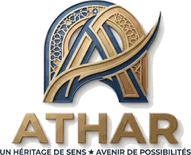

Un héritage de sens ✦ Un avenir de possibilités
Là où le geste de l’artisan devient héritage
ATHAR valorise les savoir-faire des artisans marocains, fait rayonner leurs histoires et préserve leur héritage culturel.
Découvrir les artisansNous rejoindre
La problématique
Comment contribuer au développement durable et à l’autonomisation socio-économique des artisans marocains, en valorisant leurs savoir-faire, en renforçant leur visibilité et en proposant des actions adaptées à leurs besoins ?
Nos objectifs de développement durable
Égalité entre les sexes
Autonomisation des femmes artisanes au sein des associations et coopératives locales.
Travail décent et croissance
Soutien aux revenus des artisans, valorisation du travail manuel et inclusion économique.
Consommation responsable
Valorisation de la production artisanale durable, locale et écoresponsable.
Les artisans
Parcourez les profils, filtrez par métier ou par ville, et enregistrez vos favoris.
Espace équipe
Connectez-vous pour ajouter ou supprimer des artisans.
Ajouter un artisan
Le profil est visible par tous les visiteurs dès l’enregistrement.
Laissez vide pour conserver la photo actuelle.
Produits de cet artisan
Ils s’affichent dans la fenêtre « Profil et produits ». Ajout et suppression sont immédiats.
Pour modifier ou supprimer un profil, ouvrez la page Artisans : les boutons apparaissent sur chaque fiche tant que vous êtes connecté.
Nos actions
Des actions concrètes, adaptées aux besoins des artisans et des coopératives.
Rencontres et portraits
Aller à la rencontre des artisans, recueillir leurs histoires et les partager.
VisibilitéODD 8Appui aux coopératives de femmes
Ateliers de gestion, de tarification et de commercialisation avec les coopératives locales.
FormationODD 5Vitrine du produit local
Mettre en avant des créations durables, locales et écoresponsables.
VenteODD 12Contenu proposé à partir de la fiche projet : ajustez-le avec vos actions réelles.
L’équipe du projet
Ghitha Benmessaoud
Salma Chanhaji
Karima Bahou
Aicha Boussetta
Soukaina Aadoch
Parce qu’un petit geste peut laisser une grande trace, nous voulons faire de chaque rencontre le début d’un changement durable.
Nous rejoindre
Artisan, coopérative, bénévole ou partenaire : dites-nous comment vous souhaitez participer.
Message prêt
Cette version de démonstration n’envoie pas encore de données. Branchez un service d’envoi pour recevoir les messages.